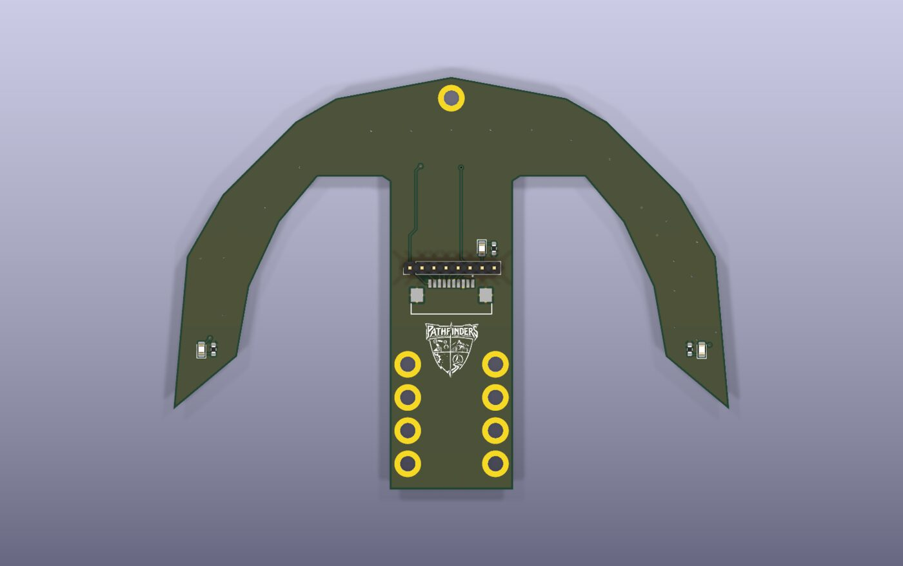

VP
V Pranav Kumar
Hardware & RF leadElectronics architecture, PCB, power and radio. Also built a LoRa 433 MHz control link on ESP32 and SX1278.
Pathfinders · ECE · VIT Chennai
Four engineers, two machines on the track, and every board, chassis and line of firmware made in-house.
Project 01 · Autonomous
Custom PCB chassis, a custom 16-sensor IR array, and an STM32 running PID at the centre.
| Chassis | Custom 2-layer PCB, 100 × 64 mmThe main board is the frame, with GND pour on both layers |
|---|---|
| Sensing | 16 × QRE1113GRReflective IR sensors on a separate custom array PCB |
| Multiplexer | CD74HC406716 analog channels into one ADC pin (MUX_OUT), select lines S0 to S3 |
| Board link | 10-pin FFC cableArray to chassis, with a 1×10 header as backup |
| Controller | STM32F103C8T6 (Blue Pill)ARM Cortex-M3 at 72 MHz, socketed in headers |
| Motor driver | TB6612FNGSparkFun ROB-14450 breakout, PWM per wheel |
| Motors | 6 V N20 micro gear motorsCompact metal-gear drive |
| IMU | MPU6050Gyro heading on the shared I²C bus |
| Display | 0.96" SSD1306 OLEDOn-robot menu and live sensor view |
| Input | 4 buttonsUp, down, enter, exit |
| Power | 2S LiPo via XT60SPDT power switch, Mini360 buck for the 3.3 V logic rail, power LED |
| Expansion | Bluetooth serial header6-pin: EN, STATE, TX, RX for wireless telemetry |
Two custom 2-layer PCBs, designed in KiCad by the team and carrying the Pathfinders crest in silkscreen. Every net class has its own trace width so motor current never shares a skinny trace with the sensors.

| Battery in, XT60 + | 1.0 mmHigh-current power |
|---|---|
| Motor A and B outputs | 0.6 mmMOTA_1/2, MOTB_1/2 |
| +3V3, GND | 0.4 mmLogic power |
| Signals | 0.25 mmDefault class |
The array goes through a CD74HC4067 multiplexer. Firmware steps the four select lines and reads all 16 channels every control cycle, which leaves Blue Pill pins free for the driver, I²C and buttons.
Gains, speed, calibration and modes live in an OLED menu and are saved to EEPROM, so we tune on the track surface with four buttons instead of reflashing between runs.
The 100 × 64 mm main board doubles as the frame, and the curved sensor board bolts on out front over a 10-pin FFC. Fewer parts, less weight and no loose sensor wiring.
A 2S LiPo feeds the motor driver while a 3.3 V buck feeds the logic, keeping motor noise away from the sensor readings.
Project 02 · Radio controlled
Our own chassis and our own control electronics. An ESP32 decodes the radio link and drives four motors on 3S power.
| Transmitter | RadioMaster PocketExpressLRS, 2.4 GHz |
|---|---|
| Receiver | SpeedyBee ELRSOutputs a CRSF digital serial stream |
| Controller | ESP32Parses CRSF frames, maps sticks to throttle and steering |
| Drive | 4 × geared DC motorsFour-wheel drive on 1/8-scale wheels |
| Power | 3S LiPoHigh-current motor rail |
| Chassis | Metal base plate, our designSketched in CAD at 185 × 175 mm with corner cut-outs for the motor mounts |
| Mounts | Bolted motor bracketsOne per corner, on the plate's edges |
| Tested on | Dirt, grass and obstacle tracksRamps, tight circles and timed race runs |
The receiver talks CRSF, the same digital link FPV drones use. Our ESP32 firmware parses the frames, pulls the stick channels and turns them into throttle and steering in real time.
Every firmware change was proven on the bench with the wheels off the ground, radio in hand, before the car went back out to the field.
A 3S pack pushes big currents into four motors on ramps, launches and crashes. The metal base plate and corner-bolted motor mounts take the abuse of off-road and obstacle runs.
A motor at every corner on 1/8-scale wheels gives the grip for loose dirt, grass and ramp climbs, and the torque to turn tight on the circle sections.
Bench test first, dirt second, competition third. Every run taught the next build something.
In-house capabilities
Nothing waits on a vendor: boards, mechanics, firmware and software all happen on our bench.
Schematic to fabrication-ready Gerbers, then hand assembly and rework.
Chassis, mounts and enclosures modelled to fit the electronics.
Brackets, sensor mounts, cases and cut plates, iterated between runs.
Real-time control loops, sensor drivers, menus and settings storage.
PID tuning, RC protocols and long-range links.
Dashboards, AI copilots and hardware description work.
The team
ECE students at VIT Chennai. We built both robots together; each of us owns a layer.
Electronics architecture, PCB, power and radio. Also built a LoRa 433 MHz control link on ESP32 and SX1278.
Control loops and sensor drivers. Built a fall-detection device and a USB HID macropad with encoders and a slider.
Dashboards and the demo layer. Built an ESP32-S3 smart home assistant, a live serial dashboard and a clinical AI copilot.
Analog front-ends and logic. Verilog state machines, an LTspice AM transmitter and an optical fibre data link.